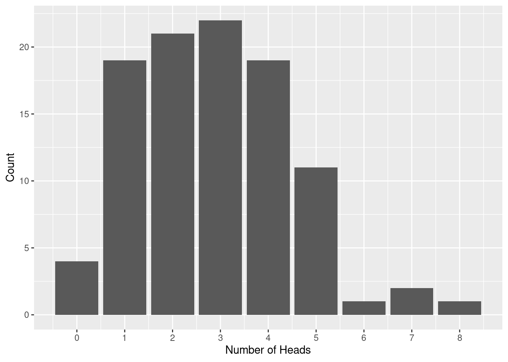

library(ggplot2)Notes on Probability in R
Things I did in class on Friday, September 1.
The four functions
As I mentioned in class, every probability distribution in R comes with 4 functions. In the case of the binomial distribution, they are:
rbinom– draws random samplesdbinom– computes the probability distributionpbinom– gives the cumulative distributionqbinom– gives the quantile function
Also, we need ggplot2.
Examples
- Suppose that the probability of heads is .3 and we flip a coin 15 times. What’s the chance of getting 6 heads?
p<-dbinom(6,15,.3)
cat("The chance is ",p)The chance is 0.147236- Let’s find the probabilities of each number of heads.
xs<-seq(0,10) # x holds 0,1,...,10
fs<-dbinom(xs,10,.3)
print(fs) [1] 0.0282475249 0.1210608210 0.2334744405 0.2668279320 0.2001209490
[6] 0.1029193452 0.0367569090 0.0090016920 0.0014467005 0.0001377810
[11] 0.0000059049- Let’s plot this. We’ll use ggplot. This is a very simple use of ggplot to make a bar chart. We’ll talk about ggplot more comprehensively later. For now, you can use this as a “black box”. In the part that says
aes(x=?,y=?)you put the data for the x and y coordinates. Thescale_x_continous(break=?)says where to put the x-ticks. Thexlab("?")labels the x-axis. Theylablabels the y-axis.
ggplot()+geom_col(aes(x=xs,y=fs))+scale_x_continuous(breaks=seq(0,10))+xlab("Number of Heads")+ylab("Probability")- Let’s sample this distribution. We’ll flip a coin with p=.3 10 times, and we’ll repeat this experiment 100 times, counting how many heads we get each repetition.
heads <- rbinom(100,10,.3)
heads [1] 1 5 2 4 5 2 6 2 4 7 3 3 4 3 2 1 2 2 4 3 2 2 4 3 4 2 4 1 3 5 6 0 3 2 3 2 4
[38] 2 3 2 6 3 3 4 2 5 2 2 2 3 3 2 4 2 3 4 4 6 2 5 2 1 5 6 4 2 2 3 2 4 2 1 3 4
[75] 5 3 1 5 4 3 2 4 2 3 2 4 2 3 2 1 0 3 4 1 2 3 2 3 1 3Now let’s make a histogram. Again, here is a “black box” command for ggplot. Again, you put the data in aes(x=?) and you put the location for the x-ticks in scale_x_continous(breaks=?).
ggplot()+geom_histogram(aes(x=heads),stat='count')+scale_x_continuous(breaks=seq(0,10))+xlab("Number of Heads")+ylab("Count")Warning in geom_histogram(aes(x = heads), stat = "count"): Ignoring unknown
parameters: `binwidth`, `bins`, and `pad`
- Suppose we flip the coin 80 times (and p=.3). What’s the chance of getting between 20 and 40 heads? This is what pbinom is for.
pbinom(40,80,.3)is the chance of getting fewer than or equal to 40 heads. If we want 20 to 40 inclusive we need to look atpbinom(41,80,.3).
chance<-pbinom(40,80,.3)-pbinom(19,80,.3)
cat("Chance of between 40 and 20 inclusive is ",chance)Chance of between 40 and 20 inclusive is 0.86472- Among the number of heads in 100 flips of a coin with .3, what’s the 25th percentile for the number of heads? That’s what
qbinomis for.
twentyFifth<-qbinom(.25,100,.3)
paste("The 25th percentile is ",twentyFifth)[1] "The 25th percentile is 27"Let’s check.
check<-pbinom(twentyFifth,100,.3)
check[1] 0.2963662This says that the chance of fewer than 27 heads is actually a bit more than .25 but the chance of fewer than 26 heads is less than .25.
- An experiment
Let’s sample from the binomial 10000 times and look at the 25th percentile.
data<-rbinom(10000,100,.3)
t1<-sum(data<twentyFifth)
t2<-sum(data<twentyFifth+1)
cat("Number less than ",twentyFifth, "is ",t1,"\n")Number less than 27 is 2181 cat("Number less than ",twentyFifth+1,"is",t2)Number less than 28 is 2893These numbers show that the 25th percentile (2500 heads) is somewhere between these two values.
Practice (note: these are now assigned in HW 2)
- Let X be a binomial random variable with n=50 and p=.7.
- Draw 1000 samples from X. How many of your sampled values are less than 30?
- Based on the probability distribution, how many sampled values would you expect to see that are less than 30?
- Plot a histogram of your sampled values.
- The poisson distribution is a discrete probability distribution that arises in queuing theory (and many other places). For example, imagine that customers arrive at a server at a rate so that, in a typical one hour period, 20 customers come. But the intervals between customers are random and independent of one another. Then in a randomly chosen hour, the probability of k customers arriving is
dpois(k,20).
- Sample this distribution 1000 times (hint: use
rpois). What is the largest number of people who arrive in an one of these random hours? What is the smallest? - Suppose you want to design your system so that it can handle the number of arriving customers 95% of the time. How many people should you design for? (Hint: use
qpois). - What’s the chance that between 18 and 22 people arrive in a given hour? (Hint: use
ppois). - Plot the Poisson distribution probabilities. (Hint: use
dpois).